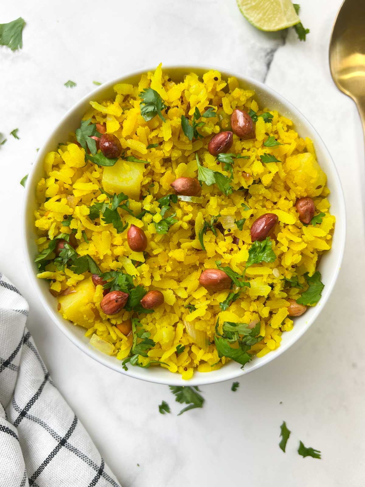

Poha
Poha is a popular Indian breakfast or snack recipe made with flattened rice (poha), onions, roasted peanuts, and a few spices. Kanda Poha is easy to make and so delicious!

If there is one meal that everyone enjoys, it has to be poha. This classic Indian breakfast option is light, filling, tasty, and guaranteed to liven up your boring daily routine. When you don't feel like cooking, this dish, prepared with onions, potatoes, lemon juice, and curry leaves, is a great choice.
What is Poha?
The word "Poha" (plural pohe) refers to two distinct things: the ingredient, which is flattened rice, and the dish made from this ingredient.
Poha are flattened rice flakes, also known as beaten rice. It is made by de-husking rice grains and parboiling them. They are then dried, roasted, and flattened with iron rollers.
- step-1
Take poha in a large strainer.
-
step-2
Wash it 1-2 times by gently swifting them with your fingers under running water. Drain the excess water through a strainer. Sprinkle salt and sugar over it, mix/toss well and keep aside.
-
step-3
Heat 2-tablespoons oil in a pan. Add mustard seeds; when they start to splutter, add cumin seeds, green chilies, curry leaves, peanuts and a pinch of asafoetida. Allow them to sizzle until chilies turn crisp for approx. 30-40 seconds.
-
step-4
Add chopped onions and sauté until onions turn translucent.
- Add chopped potatoes and salt (add salt only for potatoes).
- Mix well and cook covered until potatoes turn tender. This will take around 3-4 minutes. Stir in between occasionally to prevent sticking.
- Add turmeric powder.
- Mix well and cook for a minute.
- Add soaked poha.
- Mix well.
-
Cook for 2-3 minutes. Add lemon juice, dry grated coconut and finely chopped coriander leaves.
- Mix well and turn off the flame. Batata poha is ready for serving.